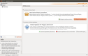
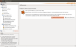
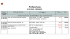
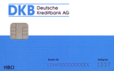
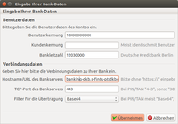
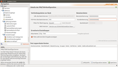
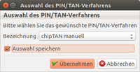

Einrichten
Dieser Artikel wurde für die folgenden Ubuntu-Versionen getestet:
Ubuntu 16.04 Xenial Xerus
Zum Verständnis dieses Artikels sind folgende Seiten hilfreich:
Hibiscus ist ein benutzerfreundliches Programm zum Online-Banking. Hinweise zur Installation und erste Schritte sind dem genannten Artikel zu entnehmen.
Hibiscus einzurichten ist nicht sehr aufwendig. Hier wird die Einrichtung unter Verwendung einer HBCI-Karte, HBCI-Schlüsseldatei und Chip-TAN erklärt. Hibiscus unterstützt auch noch PIN und TAN. Voraussetzung ist eine "HBCI-Benutzerkennung", eine Bankleitzahl, ein Bankservername und ggf. eine HBCI-Karte, alles wird von der verwendeten Bank ausgegeben. Für das Verfahren Chip-TAN wird zusätzlich ein TAN-Generator benötigt.
Vorbereitung¶
Da eine allgemeine Anleitung bei der Vielzahl verschiedener Banken und möglicher Verfahren schwierig ist, sollte man sich vorab informieren, wie Hibiscus mit der eigenen Bank zurecht kommt:
Bankzugang mit Kartenleser
 (HBCI-/Chip-Karte)
(HBCI-/Chip-Karte)
Erster Start¶
Die Installation von Hibiscus ist abgeschlossen, das Masterpasswort wurde vergeben. Nach dem Starten von Hibiscus wird das Begrüßungsfenster geöffnet, indem „Online-Updates“ aktiviert wird. Die Funktion mit einem  -Klick auf „Online-Updates aktivieren“ bestätigen. Hibiscus wird alle 7 Tage nach Updates suchen.
-Klick auf „Online-Updates aktivieren“ bestätigen. Hibiscus wird alle 7 Tage nach Updates suchen.
Nun einmal Hibiscus schließen und Hibiscus neu starten, es öffnet sich wieder das Begrüßungsfenster. Ein -Klick auf „Plugins online suchen“ ausführen. Im rechten Teil des Fensters steht unter "Hibiscus" das Plugin „HBCI-Onlinebanking-Plugin für Jameica“, dieses mit einem -Klick markieren. Unten im Fenster mit einem -Klick auf „Herunterladen und ausführen“ das Plugin herunterladen und installieren.
Ein Sicherheitsfenster öffnet sich, die Frage ob die Installation ausgeführt werden soll, mit einem -Klick auf „Ja“ bestätigen.
Im folgenden Fenster den „Plugin-Ordner“ festlegen. Hier ein -Klick auf „Übernehmen“ ausführen.
Nun Hibiscus schließen, dann Hibiscus neu starten. Hibiscus wird das Begrüßungsfenster öffnen. Links im Fenster ist jetzt schon die Banking-Anwendung zu sehen. Hibiscus ist jetzt vollständig installiert und konfiguriert, die weiteren Schritte richten sich nach der Art des Verfahrens welches genutzt werden soll.
|  |
| Begrüßungsfenster |
|  |
| Fenster mit Banking Anwendung |
|  |
| Kontoauszüge ausdrucken |
| TAN-Generator |
|  |
| HBCI-Karte |
Bank-Zugang konfigurieren¶
Verwendung mit HBCI-Karte¶
Hibiscus arbeitet auch mit dem Verfahren HBCI-Karte. Das Verwenden einer solchen HBCI-Karte macht das Online-Banking sehr einfach und sicher[2]. Benötigt wird dafür ein HBCI Kartenleser.
Allgemeine Informationen zur Einrichtung verschiedenen Kartenleser sind unter HBCI Kartenleser zu finden. Für Hibiscus stehen mehrere getestete Kartenleser unterschiedlicher Arten und Hersteller zur Verfügung. Die Einrichtung einer HBCI-Karte ist für Cherry-Kartenleser im Artikel HBCI-Karte aufgezeigt. Eine weitere Möglichkeit mit der Verwendung von ReinerSCT Kartenlesern wird im Artikel HBCI Kartenleser mit Hibiscus erläutert.
Verwendung von Chip-TAN¶
Hibiscus unterstützt Online-Banking über das Verfahren Chip-TAN.

Hinweis:
Hierbei sind die verschiedenen Bedingungen der ausgebenden Bank zu beachten, z.B. Änderung der PIN, die mit der Post versendet wurde. Ggf. wurde eine Einmal-PIN zur Anmeldung ausgegeben, die nun in eine persönliche dauerhafte PIN geändert werden muss. Dies macht ein Besuch der jeweiligen Bankseite erforderlich.
Weiterhin wird ein TAN-Generator benötigt. Im folgenden Beispiel wird der TAN-Generator der Firma Kobil benutzt. Dieser TAN-Generator ist ein eigenständiges Gerät.
Dazu wird im Begrüßungsfenster ein -Klick auf „Bankzugang einrichten“ ausgeführt. Im folgenden kleinen Fenster wird das Verfahren ausgewählt, ein -Klick auf „Bitte wählen“ öffnet die Auswahlmöglichkeiten. Hier mit einem -Klick auf „PIN/TAN“ dieses Verfahren wählen und mit einem -Klick auf „Übernehmen“ bestätigen. Chip-Tan ist ein erweitertes
Verfahren von PIN/TAN. Hibiscus aktualisiert das Hauptfenster, es öffnet sich das Fenster für die Eingaben der Zugangsdaten.
Benutzerkennung eingeben (Von der Bank erhalten)
Bankleitzahl eingeben (Von der Bank erhalten)
Nach der Eingabe der Bankleitzahl einen -Klick in der Zeile „Hostname/URL Name des Bankservers“ ausführen. Hibiscus
erkennt an der Bankleitzahl die entsprechenden Servernamen automatisch. Hier sind keine manuellen Eingaben erforderlich.

Abschließend einen -Klick auf „Übernehmen“ ausführen.
Hibiscus aktualisiert das Hauptfenster und zeigt die Eingaben nochmals an. Hier weitere Einstellungen vornehmen
Alias-Name eingeben (Chip-TAN)
Tans während der Eingabe anzeigen (Kästchen anhaken - so werden Tippfehler vermieden)
Weitere Eingaben sind hier nicht erforderlich.
Abschließend einen -Klick auf „speichern“ ausführen. Es empfiehlt sich, die Konfiguration testen, dazu einen
-Klick auf „Konfiguration testen“ ausführen.
Hibiscus startet die Kommunikation mit dem Bankserver, jetzt öffnet das Fenster für die PIN-Abfrage, hier den PIN eingeben.
Hinweis:
Hier nicht mit dem Einmal-PIN/Erst-PIN arbeiten! Den PIN vorher in einen persönlichen PIN ändern. Informationen dazu finden sich in den Unterlagen, die von den Banken ausgegeben wurden.
Achtung!
Achtung, den PIN immer verdeckt eingeben. [2]

Im folgenden Fenster die Chip-TAN Variante wählen. (manuell ist Voreingestellt) Das Kästchen „Auswahl speichern“ anhaken. Abschließend einen -Klick auf „Übernehmen“ ausführen. Im folgenden Informationsfenster einen -Klick
auf „Ok“ ausführen.
Zum Schluss die Konten automatisch anlegen lassen. Dafür im folgenden Fenster einen -Klick auf „Ja“ ausführen, nun werden die
Kontendaten abgerufen und sind unten im Fenster aufgelistet.
Nun ist das Verfahren Chip-TAN eingerichtet. Zum Abschluss das Fenster aktualisieren, hierzu einen -Klick links oben auf „Start“ ausführen. Hibiscus wechselt zum Startfenster.
Eine vorhandene HBCI-Schlüsseldatei importieren¶
Im Begrüßungsfenster einen -Klick auf „Bankzugang einrichten“ ausführen. Im folgenden kleinen Fenster das Verfahren auswählen, ein -Klick auf „Bitte wählen“ öffnet die Auswahlmöglichkeiten. Hier mit einem -Klick „Schlüsseldiskette“ wählen und mit einem -Klick auf „Übernehmen“ bestätigen.
Hibiscus aktualisiert nun das Hauptfenster, hier einen -Klick auf „Schlüsseldiskette importieren“ ausführen. Nun das Verzeichnis wählen, in welchem sich die Schlüsseldatei befindet und den Schlüssel mit einem -Klick markieren. Abschließend mit einem -Klick auf „OK“ die Schlüsseldatei importieren. Im folgenden kleinen Fenster das Format der Schlüsseldatei wählen, „HBCI4Java/Hibiscus Format“ ist bereits markiert.
Die Schlüsseldatei wird nun im Hauptfenster angezeigt, hier einen Doppel-Klick auf die Schlüsseldatei ausführen. Die Schlüsseldatei wird geöffnet, dazu das Passwort der Schlüsseldatei eingeben.
Achtung!
Passwörter immer verdeckt eingeben. [2]
Nach dem Öffnen aktualisiert Hibiscus das Hauptfenster, jetzt die Schlüsseldatei mit dem Bankserver durch einen -Klick auf
„Schlüssel-ID-synchronisieren“ neu synchronisieren. Im folgenden kleinen Sicherheitsfenster das Synchronisieren mit einem -Klick auf „Ja“ bestätigen.
Im folgenden kleinen Fenster die HBCI-Version „FinTS 3.0“ wählen und mit einem -Klick auf "Übernehmen" bestätigen. Das
Fenster schließt sich. Nun unten im Fenster mit einen -Klick „speichern“ und dann „Konfiguration testen“ ausführen.
Im folgenden kleinen Fenster erneut die HBCI-Version „FinTS 3.0“ wählen und mit einem -Klick auf „Ja“ bestätigen.
Darauf folgt die Frage „Konten automatisch anlegen“?, diese mit einem -Klick auf „Ja“ bestätigen. Damit ist der Import der Schlüsseldatei abgeschlossen. Einen -Klick links oben im Fenster auf „Start“ ausführen, jetzt kann die Bankverbindung synchronisiert werden.
Eine HBCI-Schlüsseldatei erstellen¶
Im Begrüßungsfenster einen -Klick auf „Bankzugang einrichten“ ausführen. Im folgenden kleinen Fenster das Verfahren auswählen, ein
-Klick auf „Bitte wählen“ öffnet die Auswahlmöglichkeiten. Hier mit einem -Klick auf „Schlüsseldiskette“ dieses Verfahren wählen und mit einem -Klick auf „Übernehmen“ bestätigen. Unten rechts wird jetzt die Auswahl „Neuen Schlüssel erstellen“ getroffen. Im nun folgenden Fenster wird der Speicherort der Schlüsseldatei festgelegt.
Der Name der Schlüsseldatei kann auch geändert werden. Im folgenden Fenster wird das Dateiformat festgelegt. Viele Banken unterstützen das Format „FinTS3.0“.
Weitere Information zum Sicherheitsmedium "Schlüsseldiskette" im Hibiscus Handbuch .
HBCI-Benutzerkennung¶
Jetzt ist es erforderlich, die HBCI-Benutzerkennung in die erste Zeile „Benutzerkennung“ einzugeben (Beispiel 1234567). Mit einem -Klick die Zeile markieren und die Daten eingeben. In der zweiten Zeile erfolgt kein Eintrag. Jetzt noch in die Zeile „Bankleitzahl“ die Bankleitzahl eintragen, im Beispielbild ist das die Bankleitzahl der HVB.
Im unteren Bereich „Verbindungsdaten“ wird der Hostname der Bankverbindung automatisch durch die eingegebene Bankleitzahl erkannt. Hier muss keine Änderung vorgenommen werden. Bei Erstellung der Schlüsseldatei die vorgegebenen Einstellungen so belassen. Zum Abschluss mit einem -Klick auf „Übernehmen“ die Eingaben bestätigen. Nach der Bestätigung muss ein Passwort zum Schutz der Schlüsseldatei vergeben werden. Beenden der Passworteingabe mit
einem -Klick auf „OK“.
Zum Abschluss wird noch der HBCI-Übertragungsstandard festgelegt. Es sollte die aktuelle Version 2.2 sein. Falls diese nicht ausgewählt ist, mit dem „kleine Pfeil“ das Menü mit einem -Klick öffnen und die Version 2.2 markieren und danach mit einem -Klick auf „Übernehmen“ beenden. Viele Banken unterstützen diese Version. Nun wird der Schlüssel abgerufen.
Den Schlüssel abrufen¶
Hibiscus benötigt jetzt eine Internetverbindung, um den Schlüssel von der Bank abzurufen. Nachdem Hibiscus den Schlüssel zur Bank empfangen hat, erhält das Programm die Rückmeldung von der Bank. Dies kann je nach Verbindungsgeschwindigkeit einige Sekunden/Minuten dauern. Nach Erhalt der Rückmeldung wird Hibiscus das Beenden der Internetverbindung anzeigen. Nun wird der INI-Brief ausgedruckt.
Den INI-Brief ausdrucken¶
Hibiscus erkennt automatisch den Standarddrucker, den Ausdruck mit einem -Klick auf „Drucken“ bestätigen. Der INI-Brief ist die Bestätigung für den Erhalt des Sicherheitsschlüssels, dieser muss von der Bank jetzt freigeschaltet werden. Dazu den INI-Brief an die Bank senden. Der INI-Brief kann auch als Textdatei abgespeichert werden, dadurch kann er an einem anderem PC ausgedruckt werden.
Anzeige des Schlüssels¶
Nach dem Ausdruck wird die Schlüsseldatei im Programm angezeigt. Diese wird später zum Import der Bankdaten und Konten benötigt.
Hinweis:
Das Importieren der Bankdaten unterstützen nicht alle Banken! Hier kann nach den Banken gesucht werden: Bankenliste .
Schlüssel importieren¶
Nach dem Erstellen der Schlüsseldatei können die Bankdaten aus der Schlüsseldatei importiert werden. Zuerst muss Hibiscus gestartet werden. Jameica verlangt das vergebene Passwort, welches jetzt eingegeben werden muss. Kurz darauf öffnet sich das Startfenster erneut. Hier nun "Sicherheitsmedium einrichten" erneut auswählen! Im nun folgenden Fenster ist "Schlüsseldiskette RDH" bereits markiert, auswählen und mit einem -Klick auf "Übernehmen" bestätigen. Da aber ein Schlüssel vorhanden ist, wird es nicht erforderlich, ein neuen INI-Brief auszudrucken. Hier wird jetzt der Schlüssel mit einem -Klick auf die Schaltfläche "Schlüssel importieren" in Hibiscus importiert. Es öffnet sich der Dateimanager, in dem jetzt das Laufwerk gewählt wird auf dem sich die Schlüsseldatei befindet. Diese wird dann markiert und mit einem -Klick auf "OK" bestätigt.
Im folgenden Fenster wird das Format der Schlüsseldatei nochmals bestätigt.
Konten verwalten¶
Konten importieren¶
Wenn die Schlüsseldatei vorhanden ist kann/können das/die Konto/Konten abgerufen werden. Das Medium mit der Schlüsseldatei mit dem PC verbinden. Dazu wird im linken Register mit einem -Klick "Konten gewählt". Das Register ist dann farblich unterlegt. Im rechten Bereich wird "Konten automatisch aus Sicherheitmedium ermitteln" gewählt.
Jetzt erfolgt die Abfrage nach dem Sicherheitsmedium, hier bleibt die Auswahl auf "Schlüsseldiskette (RDH)" stehen, es wird mit einem -Klick auf "Übernehmen" bestätigt. Sofort danach erfolgt die Abfrage des Passwortes für den Sicherheitsschlüssel, hier muss das gewählte Passwort eingetragen werden. Die Daten werden dann importiert.
Weitere Information zu "Konten" im Handbuch
Konto-Umsätze¶
Umsätze abrufen¶
Nach dem Konten vorhanden sind, können nun die Umsätze abgerufen werden. Hierzu das jeweilige Konto auswählen oder keines auswählen, um alle Umsätze abzurufen. Am einfachsten erfolgt das nach dem Programmstart. Hibiscus schließen und einfach neu starten. Jetzt erscheint die komfortable Benutzeroberfläche, aus der einfach die Umsätze abgerufen werden können. Im oberen Bereich den Anfangszeitpunkt und Endzeitpunkt eingeben. Das Medium mit dem Sicherheitsschlüssel mit dem PC verbinden und mit einem -Klick auf "Synchronisierung starten" den Vorgang starten. Es erfolgt wieder ein Abfragen des
Passwortes für den Sicherheitsschlüssel! Hibiscus ruft die Daten vom Bankserver ab, nach Beendigung des Datenaustausches wird unten eine grüne Meldung "erfolgreich beendet" angezeigt.
Konto-Umsätze ansehen¶
Nachdem die Umsätze abgerufen wurden, können die Bankbewegungen angesehen werden. Hierzu auf der linken Seite das Register "Kontoauszüge" mit einem -Klick wählen. Durch einen doppelten -Klick auf jeden Umsatz werden Details dazu angezeigt.
Zahlungsverkehr¶
Neue Überweisung durchführen¶
Um eine Überweisung durchzuführen wird im linken Register unter "Zahlungsverkehr" mit einem -Klick "Überweisung" ausgewählt, das dann farblich unterlegt ist. Im rechten Fenster werden Überweisungen angezeigt, die schon getätigt wurden, im Beispiel ist keine Überweisung vorhanden. Beginn der Überweisung mit einem -Klick auf "Neue Überweisung".
Daten eingeben¶
Es öffnet sich ein Fenster, in welchem die Überweisungsdaten eingegeben werden. In der obersten Zeile das Konto wählen, von dem aus die Überweisung abgebucht werden soll. Dazu mit einem -Klick den kleinen Pfeil neben "Persönliches Konto" nutzen. Es werden alle verfügbaren Konten angezeigt. Alle farblich markierten Zeilen müssen ausgefüllt werden. Sollte eine Zeile bei "Verwendungszweck" nicht ausreichen, können
"weitere Zeilen" hinzugefügt werden.
Überweisung ausführen¶
Nachdem die Überweisung vollständig ausgefüllt ist, kann sie auch als Terminüberweisung an die Bank gesendet werden. Weit verbreitet ist, dass die Überweisungen sofort ausgeführt werden, das geschieht mit einem -Klick auf "Jetzt ausführen". Es sind keine
farblich unterlegten Felder mehr sichtbar. Neben der Zeile "persönliches Konto" wird der letzte Saldo nach Auswahl des Kontos angezeigt. Nach Eingabe der korrekten Bankleitzahl wird der Name der Bank automatisch angezeigt, sobald in der Zeile "Verwendungszweck" Eintragungen vorgenommen werden.
Überweisung zur Bank übertragen¶
Jetzt erfolgt der letzte Schritt, die Übertragung der Überweisung an den Bankrechner. Hierzu muss die Sicherheitsmeldung mit einem -Klick auf "jetzt ausführen" bestätigt werden. Hibiscus zeigt diese Sicherheitsmeldung noch einmal an, damit die Überweisungsdaten noch ein letztes mal geprüft werden können. Das Medium mit Sicherheitsschlüssel mit dem PC verbinden und die Übertragung startet dann. Der Vorgang ist der selbe wie beim Abrufen der Umsätze (Passwort eingeben usw...... ) Nach erfolgter Übertragung erscheint eine Meldung "erfolgreich beendet".
Auswertungen¶
Kontoauszüge¶
Die Kontoauszüge werden im Original von der Bank ausgegeben. Unter Hibiscus können Kontoauszüge exportiert werden, um diese dann auszudrucken. Kontobewegungen können auch im Detail im Programm angesehen werden.
Kontobewegungen anzeigen¶
Kontobewegungen können jederzeit im Detail angezeigt werden. Dazu im Startfenster mit einem -Klick im linken Register unter "Auswertungen -> Kontoauszüge" wählen. Die Auswahl wird dann farblich unterlegt sein. Auf der rechten Seite wird das Fenster sofort auf die Kontoauszüge aktualisiert. Im unteren Bereich sind die Kontoauszüge eingetragen und können aufgerufen werden. Die neuen Kontobewegungen sind fett dargestellt, die älteren Kontobewegungen sind normal dargestellt. Durch einen doppelten -Klick auf eine Kontobewegung wird diese geöffnet und die Details werden
angezeigt. Durch Auswahl "Exportieren" können die Kontobewegungen mit einem -Klick in eine Kontoauszugs-PDF-Datei exportiert werden, um diesen dann ausdrucken zu können.
Kontoauszug ausdrucken¶
Kontoauszüge einzeln und/oder komplett auszudrucken ist über das Register "Kontoauszüge" möglich. Im rechten Fenster wird mit einem -Klick "Exportieren" gewählt. Im folgenden Fenster das Format "PDF" auswählen und mit "Export starten" bestätigen. Der Kontoauszug wird nach dem Speichern sofort automatisch geöffnet. Nun noch den Ordner angeben, in dem der Kontoauszug abgespeichert werden soll.
Hinweis:
Das Ausdrucken der Kontoauszüge bedeutet nicht, dass von der Bank keine Kontoauszüge mehr ausgegeben werden.
Links¶
Hibiscus FAQ
- häufige Fragen und Antworten; bei Problemen zuerst hier schauen Hibiscus Wiki
- DokumentationHBCI4Java Bereich im Onlinebanking-Forum.de
- Unterstützung durch die Gemeinschaft
- Erstellt mit Inyoka
-
 2004 – 2017 ubuntuusers.de • Einige Rechte vorbehalten
2004 – 2017 ubuntuusers.de • Einige Rechte vorbehalten
Lizenz • Kontakt • Datenschutz • Impressum • Serverstatus -
Serverhousing gespendet von